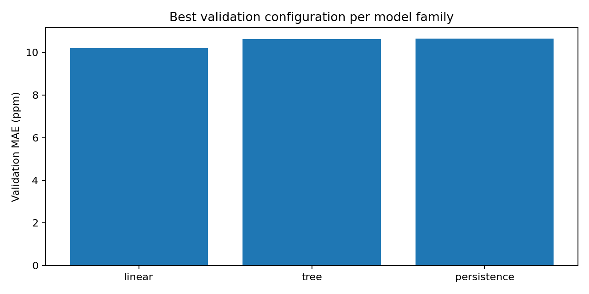
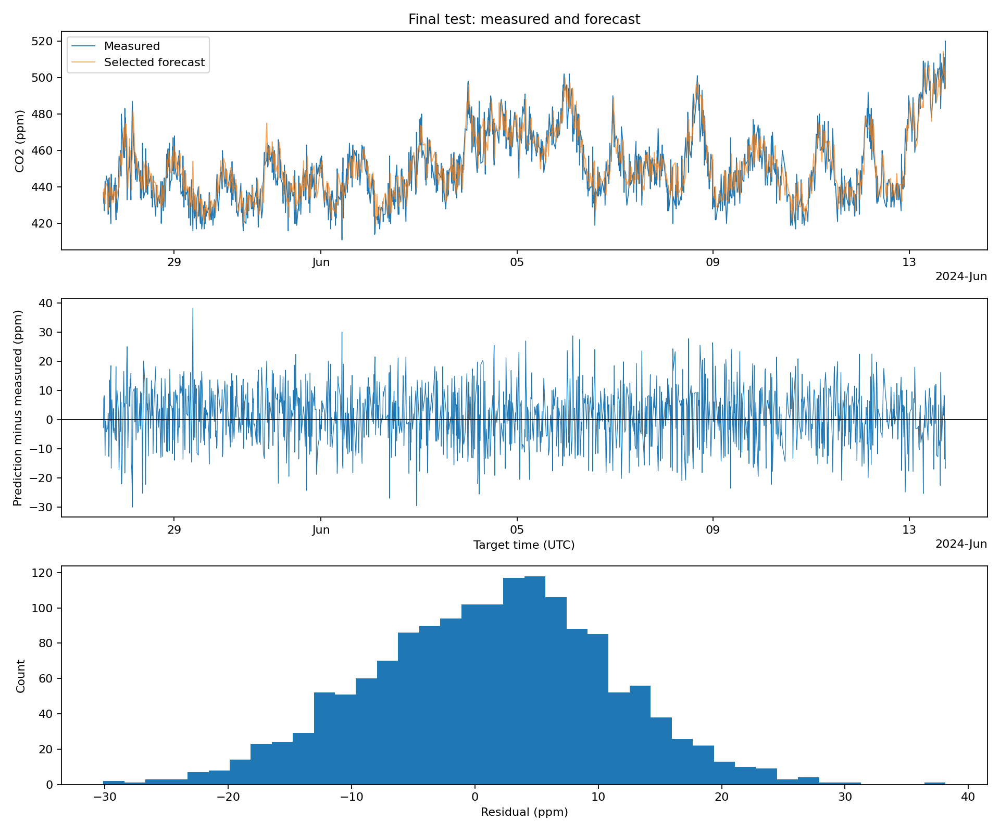

1. Engineering problem and aims
Indoor CO2 forecasting can provide an early warning that ventilation may not be keeping pace with indoor sources. The project asks how accurately the selected MSI sensor can predict measured CO2 approximately 20 minutes ahead.
2. Dataset and inputs/outputs
The environmental CSV contains 179,447 database rows with JSON-packed readings, while the occupancy CSV and location workbook provide supporting data. The model uses CO2 in ppm, temperature, humidity, historical CO2 and a rate feature. Occupancy is excluded because the available room mapping is unresolved. The selected sensor-period spans 2024-02-29 06:04:56 to 2024-06-13 17:45:44 UTC, spanning approximately 105.49 days. Observed CO2 was approximately 403-646 ppm, with a mean near 473.99 ppm. This range does not establish performance at much higher concentrations.
3. Data cleaning and exploration
Measurement times are extracted from the environmental JSON. Exact duplicates are removed, conflicting values are excluded, and non-finite or non-positive CO2 values are removed. A gap over 30 minutes starts a new contiguous period; selection uses time coverage rather than forecast performance. Of 13,800 selected-sensor issue times, 7,855 become usable forecasts before boundary purging. Approximately 43.1% of candidates are excluded, and 409,812 duplicate individual readings (not CSV rows) were removed. The exclusion categories below overlap, so they must not be added as mutually exclusive totals.
| Exclusion condition | Rows | Share of candidate rows (%) |
|---|---|---|
| missing_lag_10min | 2982 | 21.60869565217391 |
| missing_lag_20min | 3439 | 24.920289855072465 |
| missing_temperature | 0 | 0.0 |
| missing_humidity | 0 | 0.0 |
| missing_target | 1387 | 10.050724637681158 |
4. Feature construction
Features include current CO2, CO2 values approximately 10 and 20 minutes earlier, temperature, humidity and CO2 rate. Historical values use backward matching so later readings cannot leak into earlier inputs. Rates use actual elapsed time.
5. Validation design
Issue times are split chronologically into 4,712 training, 1,569 validation and 1,571 final-test rows. Boundary purging removes earlier examples whose target reaches into the next period, protecting the final test from tuning.
6. Model development
Persistence provides a transparent baseline. Ordinary least squares estimates a weighted combination of features. Decision trees partition the feature space and predict the average target in each leaf. The comparison contains 65 candidates: persistence, four linear configurations and 60 tree configurations. Validation MAE selects the configuration.
7. Results
Lower MAE and RMSE indicate smaller errors; signed error is reported separately as a bias measure.
| Candidate | MAE (ppm) | RMSE (ppm) | Signed error (ppm) |
|---|---|---|---|
| persistence | 8.6906 | 10.9208 | 0.1763 |
| linear_history_environment_rate20 | 7.8328 | 9.7250 | 1.2453 |


The selected model improves test MAE from 8.6906 ppm for persistence to 7.8328 ppm, a reduction of 0.8579 ppm or approximately 9.9%. Its positive signed error is 1.2453 ppm, compared with 0.1763 ppm for persistence, so the lower average error comes with slightly greater positive bias.
| Target week | Rows | Persistence MAE | Selected MAE | Improvement |
|---|---|---|---|---|
| 2024-W21 | 547 | 8.1773 | 7.4498 | 0.7275 |
| 2024-W22 | 618 | 9.2848 | 8.2699 | 1.0149 |
| 2024-W23 | 406 | 8.4778 | 7.6833 | 0.7945 |
8. Sensitivity and performance
The selected model is only modestly better than persistence, indicating that recent CO2 history carries most of the signal. Synthetic input noise increases validation error, while timing results should be treated as single-run engineering evidence. The selected linear fit took approximately 0.00144 seconds and the final test contains 1,571 rows; these are not formal benchmarks.
| Input noise standard deviation (ppm) | MAE (ppm) | RMSE (ppm) |
|---|---|---|
| 0.0 | 10.2028 | 13.3641 |
| 5.0 | 10.7046 | 13.8853 |
| 10.0 | 12.0657 | 15.6059 |
The environmental and rate features change validation MAE only slightly relative to CO2 history. The 20-minute rate is largely derived from current and lagged CO2, so the evidence does not justify claiming a substantial independent contribution from the extra features. The existing selection is retained because it was made by validation MAE, but the complexity benefit is weak.
9. Engineering discussion and limitations
The model is suitable as supplementary monitoring evidence, not as the sole basis for ventilation action. The study covers one sensor and one period and does not establish calibration, causal ventilation effects, uncertainty intervals, useful ventilation decisions or generalisation to other rooms and seasons. It also does not establish automatic control or health-threshold performance.
10. Conclusion
For this sensor and measured 20-minute horizon, the selected linear model improves on persistence, but the improvement is moderate. Future work should resolve room mapping, evaluate more sensors and seasons, collect higher-frequency data and validate prediction uncertainty.
11. AI-use reflection and references
OpenAI ChatGPT and Codex assisted with ideas, spelling, code generation, debugging, report structure and documentation. The author estimates approximately 70% AI contribution to coding and drafting assistance, while personally checking the timestamp series, tracing the workflow, verifying outputs and making final decisions. Complete references for the dataset, project brief, teaching notes and external methods. See README, test report and criteria checklist.
12. Repository and submission materials
Before submission, rerun the notebook, run the tests and doctest, regenerate the HTML documentation, check dependencies and README instructions, and confirm that the report, repository link, archive and presentation materials are complete.